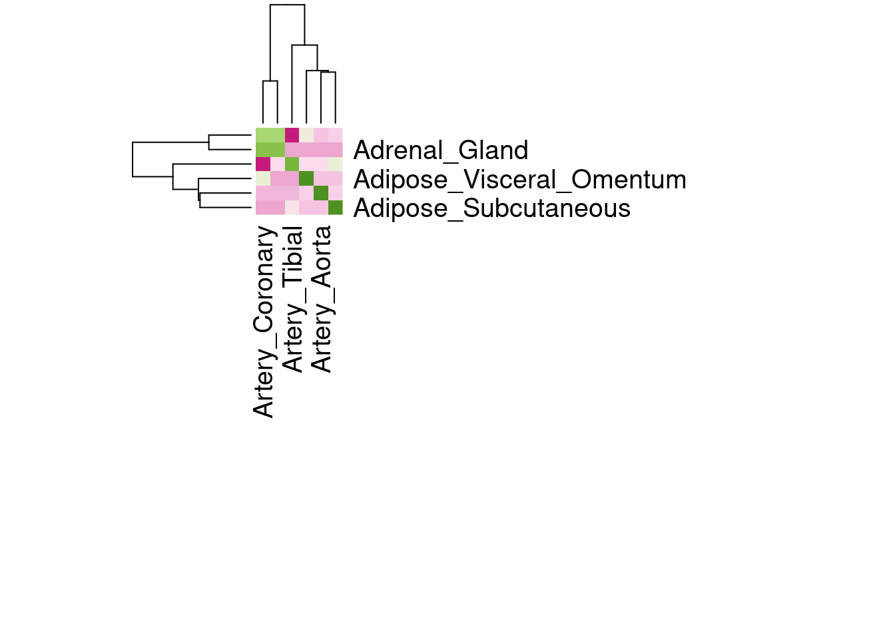

run_every_tissue
hwittich
2021-04-05
Last updated: 2021-06-01
Checks: 7 0
Knit directory: TWAS_for_protein/
This reproducible R Markdown analysis was created with workflowr (version 1.6.2). The Checks tab describes the reproducibility checks that were applied when the results were created. The Past versions tab lists the development history.
Great! Since the R Markdown file has been committed to the Git repository, you know the exact version of the code that produced these results.
Great job! The global environment was empty. Objects defined in the global environment can affect the analysis in your R Markdown file in unknown ways. For reproduciblity it’s best to always run the code in an empty environment.
The command set.seed(20210127) was run prior to running the code in the R Markdown file. Setting a seed ensures that any results that rely on randomness, e.g. subsampling or permutations, are reproducible.
Great job! Recording the operating system, R version, and package versions is critical for reproducibility.
Nice! There were no cached chunks for this analysis, so you can be confident that you successfully produced the results during this run.
Great job! Using relative paths to the files within your workflowr project makes it easier to run your code on other machines.
Great! You are using Git for version control. Tracking code development and connecting the code version to the results is critical for reproducibility.
The results in this page were generated with repository version 23c290b. See the Past versions tab to see a history of the changes made to the R Markdown and HTML files.
Note that you need to be careful to ensure that all relevant files for the analysis have been committed to Git prior to generating the results (you can use wflow_publish or wflow_git_commit). workflowr only checks the R Markdown file, but you know if there are other scripts or data files that it depends on. Below is the status of the Git repository when the results were generated:
Ignored files:
Ignored: .RData
Ignored: .Rhistory
Ignored: .Rproj.user/
Untracked files:
Untracked: code/henry@10.22.9.205
Note that any generated files, e.g. HTML, png, CSS, etc., are not included in this status report because it is ok for generated content to have uncommitted changes.
These are the previous versions of the repository in which changes were made to the R Markdown (analysis/run_every_tissue.Rmd) and HTML (docs/run_every_tissue.html) files. If you’ve configured a remote Git repository (see ?wflow_git_remote), click on the hyperlinks in the table below to view the files as they were in that past version.
| File | Version | Author | Date | Message |
|---|---|---|---|---|
| Rmd | 23c290b | hwittich | 2021-06-01 | Doing some graphing - tile plots and heat maps |
| html | a9429e4 | hwittich | 2021-04-05 | Build site. |
| Rmd | 988ef14 | hwittich | 2021-04-05 | Implemented subprocess instead of os.system to enable parallelization of |
Introduction
nohup python3 code/protein_TWAS.py --dose TOPMed_ALL_data/dosages --exp TOPMed_ALL_data/elastic_net_models/ --prot TOPMed_ALL_data/Proteome_TOPMed_ALL_ln_adjAgeSex_mean_rank-inverse_adj10PCair_MEQTL_reformatted_ids_sorted.txt --samples TOPMed_ALL_data/samples.txt --genes TOPMed_ALL_data/gene_annotation_hg38_sanitized_BP_CHROM.txt --aptamers TOPMed_ALL_data/somascan1.3k_gencode.v32_annotation.txt --out output/4-6-2021 &Now using the MASHR models from PredictDB
First, let’s test one example Predict.py command with the mashr models to ensure that they work the way the elastic net models do. If successful, then we can run them through the pipeline.
nohup python3 /home/wheelerlab3/MetaXcan/software/Predict.py --model_db_path TOPMed_ALL_data/mashr_models/mashr_Whole_Blood.db --model_db_snp_key varID --text_genotypes TOPMed_ALL_data/dosages/nohead_hg38chr*.maf0.01.R20.8.dosage.txt --text_sample_ids TOPMed_ALL_data/samples.txt --on_the_fly_mapping METADATA "chr{}_{}_{}_{}_b38" --prediction_output output/4-7-2021/testing_mashr_models/mashr_Whole_Blood_predict.txt --prediction_summary_output output/4-7-2021/testing_mashr_models/mashr_Whole_Blood_predict_summary.txt > output/4-7-2021/testing_mashr_models/nohup_mashr_test.out &Looks good!
nohup python3 code/protein_TWAS.py --dose TOPMed_ALL_data/dosages --exp TOPMed_ALL_data/mashr_models/ --prot TOPMed_ALL_data/Proteome_TOPMed_ALL_ln_adjAgeSex_mean_rank-inverse_adj10PCair_MEQTL_reformatted_ids_sorted.txt --samples TOPMed_ALL_data/samples.txt --genes TOPMed_ALL_data/gene_annotation_gencode.v37_hg38_sanitized_BP_CHROM.txt --aptamers TOPMed_ALL_data/somascan1.3k_gencode.v32_annotation.txt --out output/4-7-2021 > output/4-7-2021/nohup.out &Plotting Results
Let’s try to make a heat map comparing the PrediXcan results across all of our tissues.
I will attempt to recreate this heat map from the GTeX v8 release paper:  (A) Tissue clustering with pairwise Spearman correlation of cis-eQTL effect sizes.
(A) Tissue clustering with pairwise Spearman correlation of cis-eQTL effect sizes.
First, we need to generate a matrix of the Pearson correlation coefficient between each pair of tissues. Let’s first create a dataframe with the effect sizes for every tissue.
"%&%" <- function(a,b) paste(a,b, sep = "")
library(dplyr)
Attaching package: 'dplyr'The following objects are masked from 'package:stats':
filter, lagThe following objects are masked from 'package:base':
intersect, setdiff, setequal, unionlibrary(data.table)
Attaching package: 'data.table'The following objects are masked from 'package:dplyr':
between, first, last#Make a list of the tissues
tissues <- c("Adipose_Subcutaneous","Adipose_Visceral_Omentum","Adrenal_Gland","Artery_Aorta","Artery_Coronary","Artery_Tibial")#,"Brain_Amygdala","Brain_Anterior_cingulate_cortex_BA24","Brain_Caudate_basal_ganglia","Brain_Cerebellar_Hemisphere","Brain_Cerebellum","Brain_Cortex","Brain_Frontal_Cortex_BA9","Brain_Hippocampus","Brain_Hypothalamus","Brain_Nucleus_accumbens_basal_ganglia","Brain_Putamen_basal_ganglia","Brain_Spinal_cord_cervical_c-1","Brain_Substantia_nigra","Breast_Mammary_Tissue","Cells_Cultured_fibroblasts","Cells_EBV-transformed_lymphocytes","Colon_Sigmoid","Colon_Transverse","Esophagus_Gastroesophageal_Junction","Esophagus_Mucosa","Esophagus_Muscularis","Heart_Atrial_Appendage","Heart_Left_Ventricle","Kidney_Cortex","Liver","Lung","Minor_Salivary_Gland","Muscle_Skeletal","Nerve_Tibial","Ovary","Pancreas","Pituitary","Prostate","Skin_Not_Sun_Exposed_Suprapubic","Skin_Sun_Exposed_Lower_leg","Small_Intestine_Terminal_Ileum","Spleen","Stomach","Testis","Thyroid","Uterus","Vagina","Whole_Blood")
#Create dataframe with all the effect sizes
tissue <- tissues[1]
effects <- fread("/home/hwittich/mount/TWAS_for_protein/output/4-7-2021/mashr_"%&%tissue%&%"/mashr_"%&%tissue%&%"_every_protein_association.txt",header=T,stringsAsFactors = F,sep="\t") %>% select(protein,gene,effect) %>% mutate(pair = protein %&% "_" %&% gene, .keep="unused") %>% rename(!!tissue:= effect)
for(tissue in tissues[2:length(tissues)]){
new_effects <- fread("/home/hwittich/mount/TWAS_for_protein/output/4-7-2021/mashr_"%&%tissue%&%"/mashr_"%&%tissue%&%"_every_protein_association.txt",header=T,stringsAsFactors = F,sep="\t") %>% select(protein,gene,effect) %>% mutate(pair = protein %&% "_" %&% gene, .keep="unused") %>% rename(!!tissue:= effect)
effects <- effects %>% full_join(new_effects,by=c("pair"="pair"))
}
effects <- effects %>% relocate(pair)Now let’s create a matrix of correlation coefficients for every tissue pair.
corr_matrix <- matrix(NA,length(tissues),length(tissues))
rownames(corr_matrix) <- tissues
colnames(corr_matrix) <- tissues
for (i in 1:length(tissues)) {
for(j in 1:length(tissues)) {
if(i==j) {
corr_matrix[i,j] <- 1
} else {
tissue1 <- tissues[i]
tissue2 <- tissues[j]
tissue_pair <- effects %>% select(!!tissue1, !!tissue2) %>% filter(!is.na(get(tissue1)), !is.na(get(tissue2)))
library(psych)
results <- corr.test(x=tissue_pair[,1], y=tissue_pair[,2], method="pearson")
corr_coef <- results$r
corr_matrix[i,j] <- corr_coef
}
}
}Now let’s plot the heat map using the matrix of correlation coefficients!
library(RColorBrewer)
color <- colorRampPalette(brewer.pal(8,"PiYG"))(25)
heatmap(corr_matrix, revC=TRUE, col=color, margins = c(20,20))
A full plot comparing all 49 tissues is shown below.
sessionInfo()R version 3.6.3 (2020-02-29)
Platform: x86_64-pc-linux-gnu (64-bit)
Running under: Ubuntu 20.04.2 LTS
Matrix products: default
BLAS: /usr/lib/x86_64-linux-gnu/blas/libblas.so.3.9.0
LAPACK: /usr/lib/x86_64-linux-gnu/lapack/liblapack.so.3.9.0
locale:
[1] LC_CTYPE=en_US.UTF-8 LC_NUMERIC=C
[3] LC_TIME=en_US.UTF-8 LC_COLLATE=en_US.UTF-8
[5] LC_MONETARY=en_US.UTF-8 LC_MESSAGES=en_US.UTF-8
[7] LC_PAPER=en_US.UTF-8 LC_NAME=C
[9] LC_ADDRESS=C LC_TELEPHONE=C
[11] LC_MEASUREMENT=en_US.UTF-8 LC_IDENTIFICATION=C
attached base packages:
[1] stats graphics grDevices utils datasets methods base
other attached packages:
[1] RColorBrewer_1.1-2 psych_2.1.3 data.table_1.14.0 dplyr_1.0.5
[5] workflowr_1.6.2
loaded via a namespace (and not attached):
[1] Rcpp_1.0.6 highr_0.9 pillar_1.6.0 compiler_3.6.3
[5] later_1.1.0.1 git2r_0.28.0 tools_3.6.3 digest_0.6.27
[9] nlme_3.1-144 lattice_0.20-40 evaluate_0.14 lifecycle_1.0.0
[13] tibble_3.1.0 pkgconfig_2.0.3 rlang_0.4.10 DBI_1.1.1
[17] parallel_3.6.3 yaml_2.2.1 xfun_0.22 stringr_1.4.0
[21] knitr_1.32 generics_0.1.0 fs_1.5.0 vctrs_0.3.7
[25] grid_3.6.3 rprojroot_2.0.2 tidyselect_1.1.0 glue_1.4.2
[29] R6_2.5.0 fansi_0.4.2 rmarkdown_2.7 purrr_0.3.4
[33] magrittr_2.0.1 whisker_0.4 promises_1.2.0.1 ellipsis_0.3.1
[37] htmltools_0.5.1.1 mnormt_2.0.2 assertthat_0.2.1 httpuv_1.5.5
[41] utf8_1.2.1 stringi_1.5.3 tmvnsim_1.0-2 crayon_1.4.1